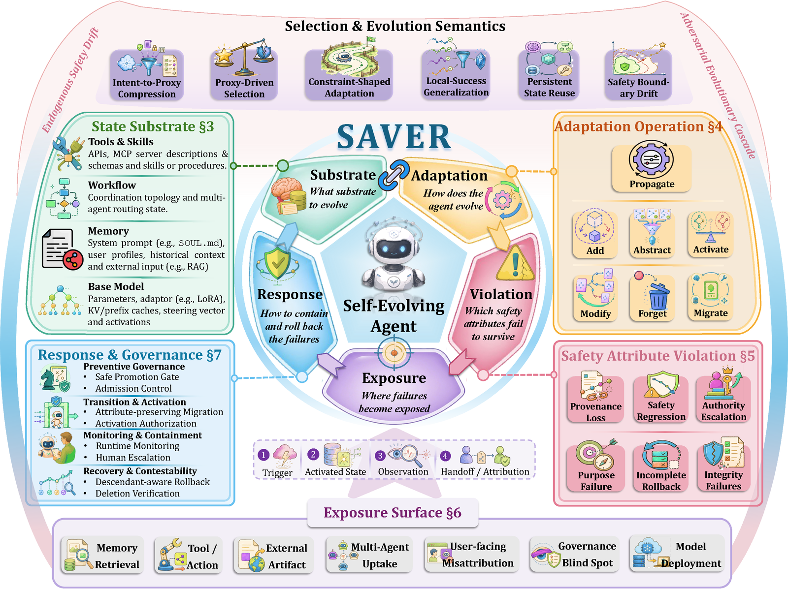
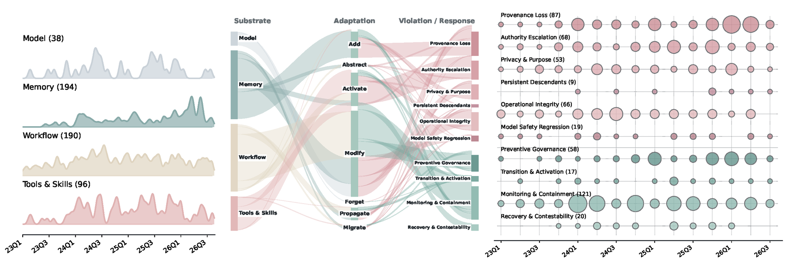
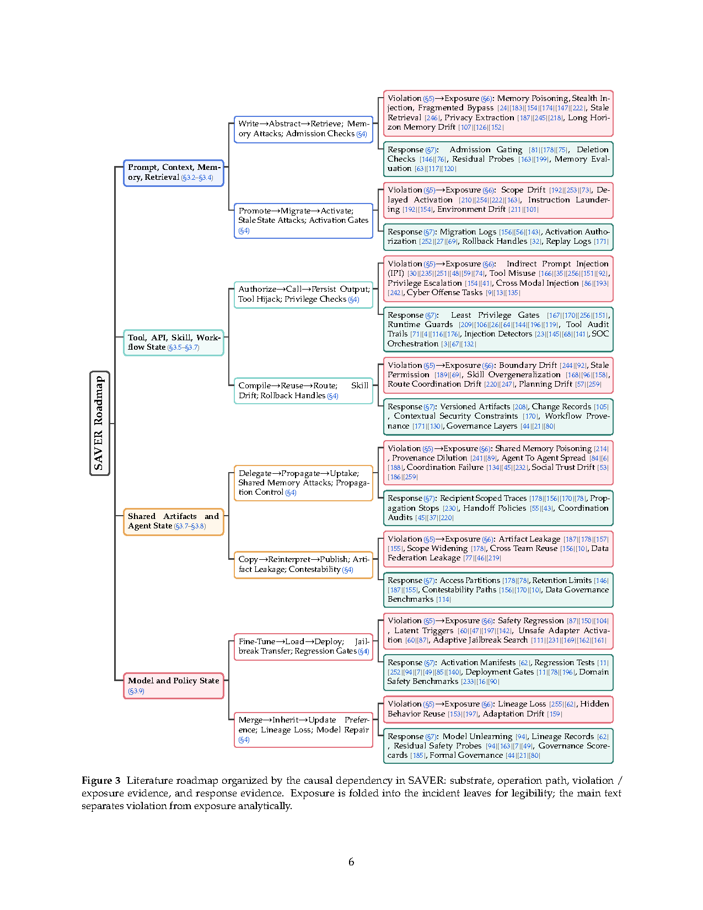
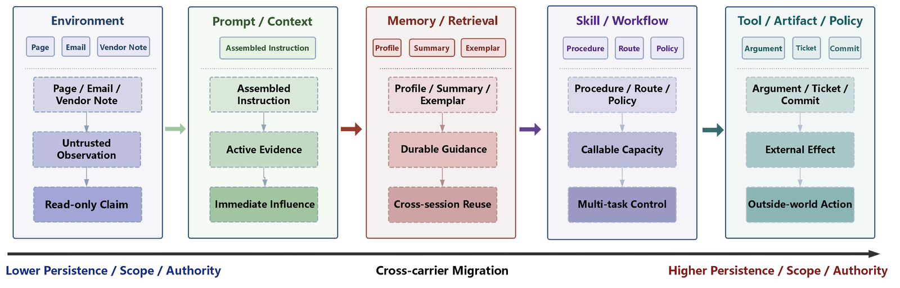
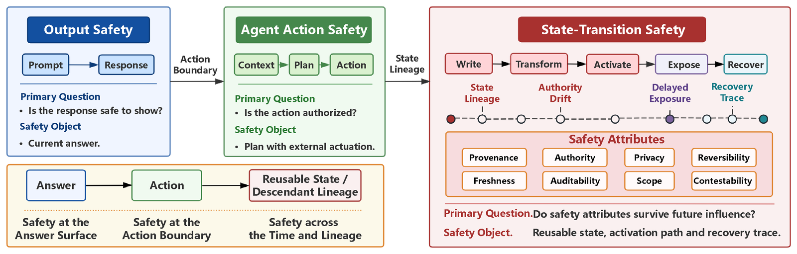
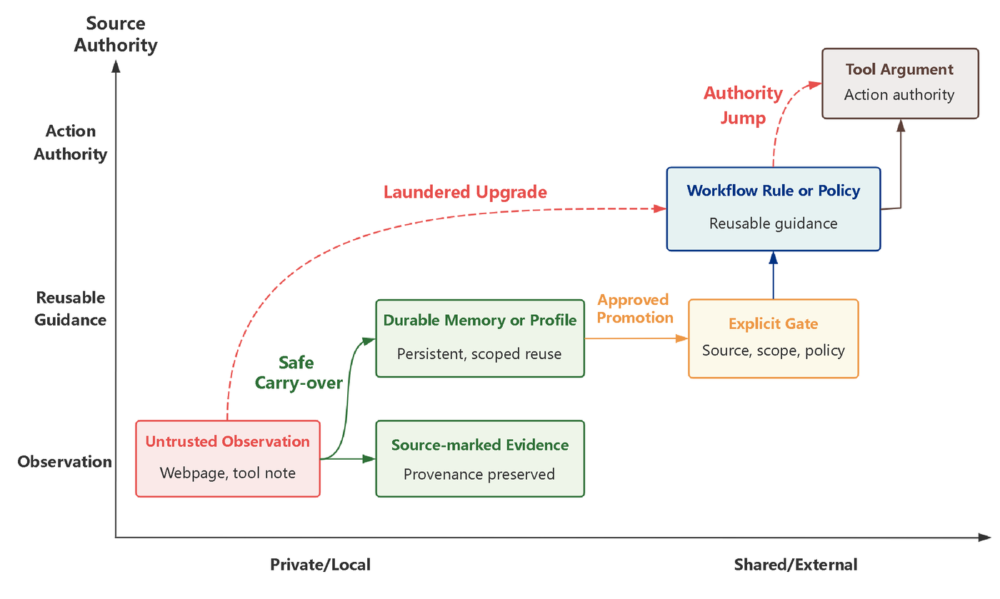

Safety in Self-Evolving Agents: A Survey
A transition-centered survey framework that traces how reusable influence persists, moves, and changes role across carriers
 2026 · Preprint
2026 · Preprint
Jiahao Chen1, Zhou Feng1, Oubo Ma1, Yichen Yan1, Ruixiao Lin1, Hangtao Zhang2, Linkang Du3, Yiming Li8, Hengyu An1, Jun Liu13, Junhao Li1, Naen Xu1, Mengyao Du4, Yuanyi Song5, Chunyi Zhou1, Tianyu Du1, Yuan Su1, Zehao Jin6, Qianli Ma7, Leyi Qi8, Yiming Wang1, Zhihui Fu2, Jun Wang2, Zhe Ma9, Yuwen Pu11, Jinfeng Li12, Shouling Ji1
1Zhejiang University · 2Huazhong University of Science and Technology · 3Xi'an Jiaotong University · 4National University of Defense Technology · 5Shanghai Jiaotong University · 6Georgia Institute of Technology · 7University of Science and Technology of China · 8Nanyang Technological University · 9OPPO Research Institute · 11Chongqing University · 12Alibaba Group · 13Rakuten Group
Correspondence: xaddwell@zju.edu.cn
Abstract
Large language models (LLMs) have demonstrated remarkable capabilities yet remain fundamentally static: their parameters cannot adapt to novel tasks, evolving knowledge domains, or dynamic interaction contexts. As LLM-based agents are increasingly deployed in open-ended, interactive environments, this static nature has become a critical bottleneck, motivating a paradigm shift from scaling static models to self-evolving agents that reason, act, and continually learn from data, interactions, and experience. Such agents evolve models, memory, tools, and architecture at intra-test-time or inter-test-time stages, guided by scalar rewards, textual feedback, and single-agent or multi-agent designs.
This shift fundamentally changes the safety problem: when experience becomes reusable state, past events become future causes, and information that was harmless in one context may later influence decisions with greater persistence, authority, or scope. Unlike LLM and agent safety, which asks whether a response is aligned or an action is authorized, self-evolving agent safety asks whether safety properties survive across state adaptations. Existing surveys characterize agent safety through components, evolution mechanisms, or lifecycles, but rarely explain how the same influence changes its safety implications when it crosses substrate boundaries.
To address this gap, we present SAVER, a transition-centered framework that analyzes self-evolving agent safety through the relation S×A→V→E→R: Substrate identifies where reusable influence resides, Adaptation captures how its role changes, Violation characterizes the failed safety attributes, Exposure identifies where the failure becomes observable, and Response evaluates whether the influence can be contained or recovered. SAVER treats the substrate-adaptation transition as the fundamental analysis unit and traces safety attribute violations, exposure surfaces, and response mechanisms across memory, tool and workflow, multi-agent, and model-side research.
Overview

Key Insights
- Many safety failures originate not from intrinsically harmful information, but from unsafe transitions that elevate the persistence, authority, or scope of otherwise legitimate state.
- Existing research is effective at controlling unsafe admission and visible failures, yet lacks mechanisms for tracking influence lineage across migration, propagation, and recovery.
- Future evaluations should move beyond endpoint-based metrics toward lifecycle-level evidence that verifies whether unsafe influence can be traced, contained, and prevented from re-emerging after continued adaptation.
Figures





Citation
@article{chen2026saver,
title={Safety in Self-Evolving Agents: A Survey},
author={Chen, Jiahao and Feng, Zhou and Ma, Oubo and Yan, Yichen and Lin, Ruixiao and Zhang, Hangtao and Du, Linkang and Li, Yiming and An, Hengyu and Liu, Jun and Li, Junhao and Xu, Naen and Du, Mengyao and Song, Yuanyi and Zhou, Chunyi and Du, Tianyu and Su, Yuan and Jin, Zehao and Ma, Qianli and Qi, Leyi and Wang, Yiming and Fu, Zhihui and Wang, Jun and Ma, Zhe and Pu, Yuwen and Li, Jinfeng and Ji, Shouling},
year={2026},
note={Preprint}
}